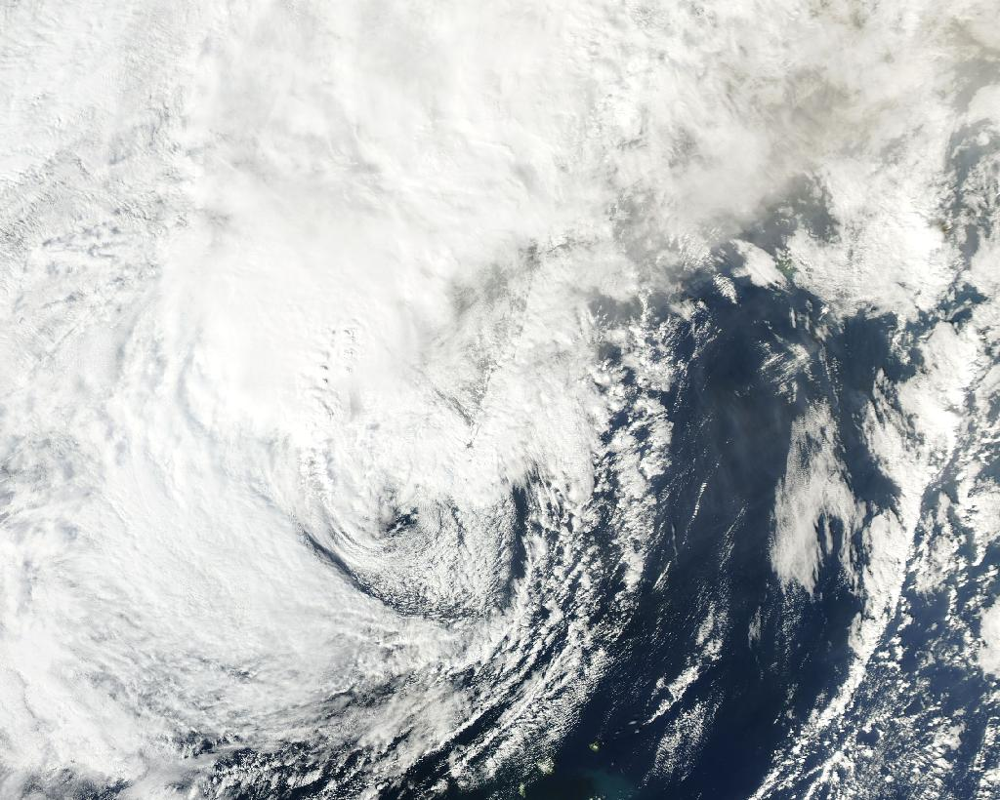

Cyclone Pulse
🌐 English
規則
聲音：開啟
中度颱風
2025年11月12日 19:40 登陸屏東縣恆春鎮
鳳凰颱風
最大風速
48
m/s
中心氣壓
930
hPa
登陸地點
屏東縣恆春鎮
▶
開始體驗

衛星雲圖
侵台路徑
歷史登陸颱風
遊玩方式
✕
跟隨節拍圈，自由選擇四種音色
當白色節拍圈收縮至颱風眼中心時，
只要拍點對就得分
。你可以自由按下
↑（水晶鐘琴）
、
←（溫暖電鋼琴）
、
→（空靈拇指琴）
或
↓（合成弦樂）
演奏不同音色。
風速 (m/s) 與 RPM 節奏速度
畫面左側會即時顯示颱風最大風速（m/s）、大氣壓力（hPa）以及當前的
節奏速度（RPM）
與節拍指示燈。
自動產出個人化 Demo 音訊
觀測結束後，系統會根據颱風路徑數據與你本局選擇的四種音色，自動合成專屬的 Demo 音樂供試聽與下載。
鳳凰颱風
🌐 English
再玩一次
所有颱風
表現摘要
S
分數
0
最大連擊
0
節拍準確率
100%
Perfect
0
Great
0
Good
0
Miss
0
專屬氣象聲景 Demo
已根據本場颱風氣壓、風速與你演奏的四向音色自動合成。
已就緒
換一版編曲
下載音訊 (.WAV)